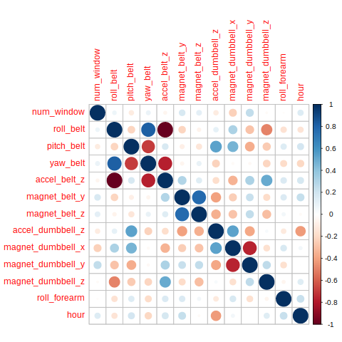

Practical Machine Learning : Project
1 Overview
This document is the main project of the pratical machine learning course of the data science specialization. The document was built using emacs Org-mode Babel and exported to html and equivalent Rmarkdown file was also generated because it was required for grading purpose.
2 Background
Using devices such as Jawbone Up, Nike FuelBand, and Fitbit it is now possible to collect a large amount of data about personal activity relatively inexpensively. These type of devices are part of the quantified self movement - a group of enthusiasts who take measurements about themselves regularly to improve their health, to find patterns in their behavior, or because they are tech geeks. One thing that people regularly do is quantify how much of a particular activity they do, but they rarely quantify how well they do it. In this project, your goal will be to use data from accelerometers on the belt, forearm, arm, and dumbell of 6 participants. They were asked to perform barbell lifts correctly and incorrectly in 5 different ways. More information is available from the website here: http://groupware.les.inf.puc-rio.br/har (see the section on the Weight Lifting Exercise Dataset).
3 Package used for the analysis
We used the following package for this analysis
library(ggplot2) library(mlr) library(dplyr) library(curl) library(lubridate) library(corrplot)
We can highlight in particular the use of the mlr R package instead of caret.
The mlr package was chosen because of the cleaner interface and capabilities similar to caret.
4 Reading the data
Both training and testing data were pulled from their original url
url_train <- "https://d396qusza40orc.cloudfront.net/predmachlearn/pml-training.csv" url_test <- "https://d396qusza40orc.cloudfront.net/predmachlearn/pml-testing.csv"
Data were downloaded once and at each run we test if the file is in right folder
if (!file.exists("data/train.csv")) curl_download(url_train, destfile = "data/train.csv", quiet = TRUE) if (!file.exists("data/test.csv")) curl_download(url_test, destfile = "data/test.csv", quiet = TRUE)
We then read the data using the read.csv function.
train <- read.csv("data/train.csv", stringsAsFactors = FALSE, na.strings = c("#DIV/0!", NA), row.names = 1) test <- read.csv("data/test.csv", stringsAsFactors = FALSE, na.strings = c("#DIV/0!", NA), row.names = 1)
5 Cleaning the data
Before fitting a model and predicting user movement, we need to create some features and remove some of them.
5.1 Creating new features and remove all NA features
In this step we created the hour of the day when the movement were recorded and we turned all the character to factor.
train$raw_timestamp_part_1 <- as.POSIXct(train$raw_timestamp_part_1, origin = "1970-01-01") test$raw_timestamp_part_1 <- as.POSIXct(test$raw_timestamp_part_1, origin = "1970-01-01") train$hour <- hour(train$raw_timestamp_part_1) test$hour <- hour(test$raw_timestamp_part_1) train$classe <- factor(train$classe) train$user_name <- factor(train$user_name) test$user_name <- factor(test$user_name) train$new_window <- as.integer(factor(train$new_window)) - 1 test$new_window <- as.integer(factor(test$new_window)) - 1
We also removed all null column (full of missing values) and kept the hour instead of the timestamp.
ind <- sapply(train, function(x) all(is.na(x))) train <- train[, !ind] test <- test[, !ind] toremove <- c("raw_timestamp_part_1", "raw_timestamp_part_2", "cvtd_timestamp") ind <- !names(train) %in% toremove train <- train[, ind] test <- test[, ind]
5.2 Create a task a remove near constant features
In order to use the mlr package, we need to create a task.
In this analysis, we are doing classifcation therefore we can use the makeClassifTask function.
Constant features were also removed from the rest of the analysis.
task <- makeClassifTask(id = "fitbits_pred", data = train, target = "classe") task <- removeConstantFeatures(task, perc = 0.05) task
Removing 95 columns: new_window,kurtosis_roll_belt,kurtosis_picth_belt,skewness_roll_belt,skewness_roll_belt.1,max_roll_belt,max_picth_belt,max_yaw_belt,min_roll_belt,min_pitch_belt,min_yaw_belt,amplitude_roll_belt,amplitude_pitch_belt,amplitude_yaw_belt,var_total_accel_belt,avg_roll_belt,stddev_roll_belt,var_roll_belt,avg_pitch_belt,stddev_pitch_belt,var_pitch_belt,avg_yaw_belt,stddev_yaw_belt,var_yaw_belt,var_accel_arm,avg_roll_arm,stddev_roll_arm,var_roll_arm,avg_pitch_arm,stddev_pitch_arm,var_pitch_arm,avg_yaw_arm,stddev_yaw_arm,var_yaw_arm,kurtosis_roll_arm,kurtosis_picth_arm,kurtosis_yaw_arm,skewness_roll_arm,skewness_pitch_arm,skewness_yaw_arm,max_roll_arm,max_picth_arm,max_yaw_arm,min_roll_arm,min_pitch_arm,min_yaw_arm,amplitude_roll_arm,amplitude_pitch_arm,amplitude_yaw_arm,kurtosis_roll_dumbbell,kurtosis_picth_dumbbell,skewness_roll_dumbbell,skewness_pitch_dumbbell,max_roll_dumbbell,max_picth_dumbbell,max_yaw_dumbbell,min_roll_dumbbell,min_pitch_dumbbell,min_yaw_dumbbell,amplitude_roll_dumbbell,amplitude_pitch_dumbbell,amplitude_yaw_dumbbell,var_accel_dumbbell,avg_roll_dumbbell,stddev_roll_dumbbell,var_roll_dumbbell,avg_pitch_dumbbell,stddev_pitch_dumbbell,var_pitch_dumbbell,avg_yaw_dumbbell,stddev_yaw_dumbbell,var_yaw_dumbbell,kurtosis_roll_forearm,kurtosis_picth_forearm,skewness_roll_forearm,skewness_pitch_forearm,max_roll_forearm,max_picth_forearm,max_yaw_forearm,min_roll_forearm,min_pitch_forearm,min_yaw_forearm,amplitude_roll_forearm,amplitude_pitch_forearm,amplitude_yaw_forearm,var_accel_forearm,avg_roll_forearm,stddev_roll_forearm,var_roll_forearm,avg_pitch_forearm,stddev_pitch_forearm,var_pitch_forearm,avg_yaw_forearm,stddev_yaw_forearm,var_yaw_forearm
Supervised task: fitbits_pred
Type: classif
Target: classe
Observations: 19622
Features:
numerics factors ordered
54 1 0
Missings: FALSE
Has weights: FALSE
Has blocking: FALSE
Classes: 5
A B C D E
5580 3797 3422 3216 3607
Positive class: NA
5.3 Filter feature a remove non important variables
We filtered the data and kept the 25% most important variable based on the information gain of each variable (based on a randomForest model).
fv <- generateFilterValuesData(task, method = "information.gain") task <- filterFeatures(task, fval = fv, perc = 0.25, mandatory.feat = c("user_name", "hour")) task
R> Supervised task: fitbits_pred
Type: classif
Target: classe
Observations: 19622
Features:
numerics factors ordered
13 1 0
Missings: FALSE
Has weights: FALSE
Has blocking: FALSE
Classes: 5
A B C D E
5580 3797 3422 3216 3607
Positive class: NA
5.4 Check the final and most important variables
In order to check the final variable, a corrplot was used. The first and last (15) features are factors, they were thus removed before computing the linear correlation.
corrplot(cor(getTaskData(task)[-c(1, 15)], use = "pairwise"))

Based on the graph, we just have two variables that are highly correlated (accel_belt_z and roll_belt).
6 RandomForest model to predict
For this analysis we decided to use randomForest to predict user movement because of the
high accuracy and robustness of this model which an enhanced version of the popular bagging.
6.1 Model tuning and model evaluation
We used a 10-fold cross validation to select the best parameters and evaluation the model.
In the RandomForest model, the two most important parameters are the number of variable that sample
at each run of the algorithm (mtry) and the number of tree since when use regression trees as base learner (ntree).
6.1.1 Set the learner
We set the learner using makeLearner function
rflrn <- makeLearner("classif.randomForest")
6.1.2 Cross-validation to select hyperparameters and evaluate the model
A 10-fold cross-validation is used to select the best parameters and evaluate the model for this parameters
set.seed(1) rdesc <- makeResampleDesc("CV", iters = 10, predict = "test") ps <- makeParamSet(makeIntegerParam("mtry", lower = 2, upper = 10), makeIntegerParam("ntree", lower = 500, upper = 5000)) ctrl <- makeTuneControlGrid() tune <- tuneParams(rflrn, task = task, resampling = rdesc, par.set = ps, control = ctrl)
The model has very high predictive power, with an misclassification error rates of
0.06% based on the 10-fold cross-validation. The optimal mtry and ntree are respectively 6 and 5000.
Tune result: Op. pars: mtry=6; ntree=5000 mmce.test.mean=0.000662
6.2 Prediction
We can then set the parameters and predict on both training and testing set
rflrn_tune <- setHyperPars(rflrn, par.vals = tune$x) mod <- train(rflrn_tune, task) mod
R> Model for learner.id=classif.randomForest; learner.class=classif.randomForest Trained on: task.id = fitbits_pred; obs = 19622; features = 14 Hyperparameters: mtry=6,ntree=5000
6.2.1 Prediction on training set
We have a perfect prediction on training set, which is not a surprise, since the cross-validated misclassification error is close to 0.
predtrain <- predict(mod, task = task) table(predtrain$data[,-1])
response
truth A B C D E
A 5580 0 0 0 0
B 0 3797 0 0 0
C 0 0 3422 0 0
D 0 0 0 3216 0
E 0 0 0 0 3607
A misclassification error of 0
performance(predtrain)
mmce 0
6.2.2 Prediction on testing set
Finally we can predict on the testing set and based on the cross-validated misclassification error, we can also expect some good prediction.
predtest <- predict(mod$learner.model, newdata = test) predtest
1 2 3 4 5 6 7 8 9 10 11 12 13 14 15 16 17 18 19 20 B A B A A E D B A A B C B A E E A B B B Levels: A B C D E